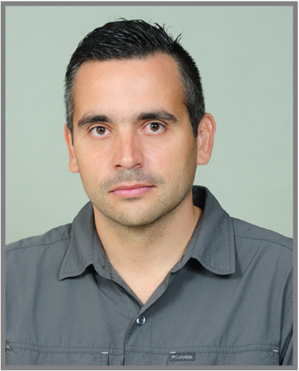

CURRICULUM VITAE

Oscar Ayala
Resumen
Venezolano, actualmente vivo en Chile desde hace 5 años. Soy proactivo, autodidacta, dedicado a cumplir las
metas trazadas. Alegre, empático, trabajo bajo presión, buen oyente, siempre en busca de la mejor solución.
Me gusta el deporte, busco aprender algo nuevo cada día.
Datos Personales
- Nombre: Oscar Jesus Ayala Montero
- Lugar de Nacimiento: Caracas, Distrito Federal, Venezuela
- Fecha de Nacimiento: 03 de Octubre de 1979
Experiencia Laboral
- ECRGROUP - Claro. – Analista de Logística (Santiago, Chile) 04/2018 – Actual
- Supermercados Ekono. – Asistente de Local (Santiago, Chile) 05/2017 – 04/2018
- Instituto Venezolano de Investigaciones Científicas. – Soporte Técnico Biblioteca Marcel Roche (San Antonio de los Altos, Venezuela) 06/2015 – 01/2017
- Auto Premium, C.A. – Analista de Sistemas (San Antonio de los Altos, Venezuela) 06/2007 – 06/2015
Portafolio